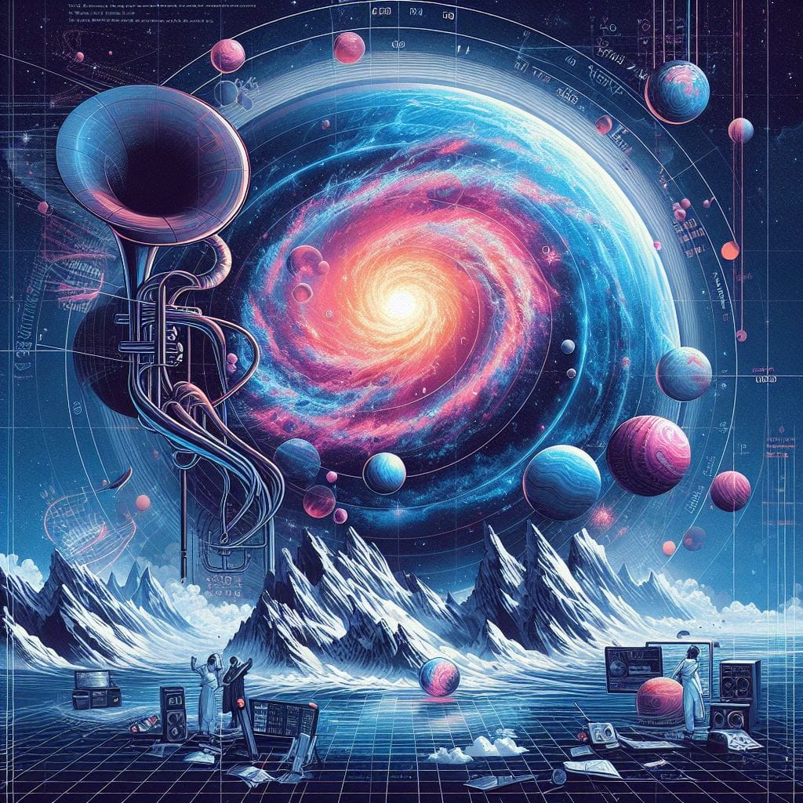

STEAM & Data Sonification
Listening to the universe through mathematics.
Mathematical Modeling & Music Theory
1st Place, Sigma STEAM Competition 2024

Cosmic Acoustics
The universe is full of mathematical patterns, from the spiral of a galaxy to the frequencies of a musical chord. With "Cosmic Acoustics," our team wanted to bridge the gap between hard science and art. We set out to answer a simple but highly complex question: What does a galaxy sound like?
We took high-resolution images of galaxies captured by space telescopes and developed a system to translate their visual data into an auditory experience. By extracting the raw pixel data—specifically color and brightness—we converted an image of space into a structural music album.
My role in the project was completely focused on the logic connecting the data. I did not write the core software; instead, I created the mathematical formulations and defined the music theory rules that the software needed to follow.
To translate a pixel into a sound, we utilized fractal geometry and the Golden Ratio. By analyzing the complexity and uniqueness of the galaxy's structure, I mapped the color values (RGB) and brightness levels of the pixels to a mathematical scale. The Golden Ratio helped us keep the scaling proportional and natural, giving the data a rhythmic mathematical foundation before it was even converted to sound.
Raw frequencies converted directly from data sound like noise, not music. We applied music composition rules to act as a filter, constrained the mathematical outputs to specific musical scales and harmonic structures. This meant the software didn't just produce random beeps; it generated a coherent, listenable melody that stayed true to the visual nature of the galaxy it was analyzing.
By proving that data sonification can be both scientifically accurate and artistically beautiful, our team won 1st Place in the Sigma STEAM Project Competition 2024.